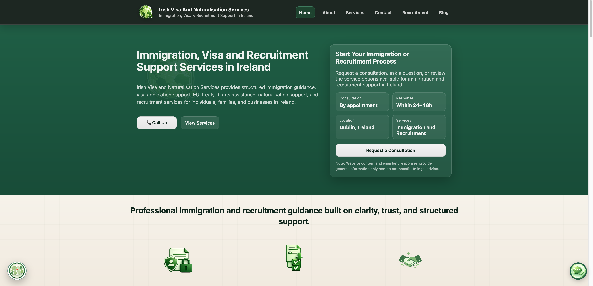
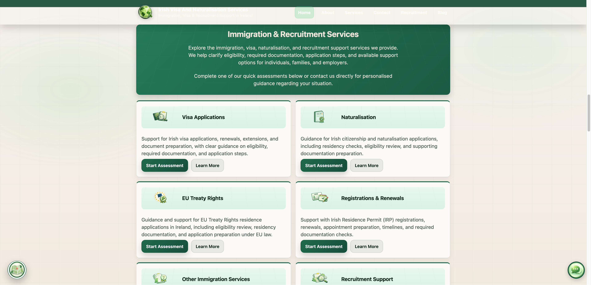

Calm, consistent presentation
Green tones, readable type, familiar navigation and clearly separated content help keep attention on the services. Repeated card and button patterns make the experience easier to follow.
Making it easier to find the right support.
A welcoming website that connects
immigration and recruitment services with the people who need them.

Irish Visa and Naturalisation Services (IVANS) is an Ireland-based immigration and recruitment support business. Its audience includes individuals exploring visa and residence options, families looking for guidance, and employers or job seekers needing recruitment support.
I designed and developed the full website system around a practical goal: help those visitors understand the available services and reach the business in a way that suits them.
The website brings detailed service information, initial assessments, online and in-person consultation routes, a contact form and an AI information assistant into one connected experience.
The client’s priority was outreach: making its services easier to discover, understand and access. For someone facing an unfamiliar process, a long list of services is only useful if they can recognise what applies to them and see what to do next.
The design needed to support different levels of readiness. Some visitors want to read first. Others have a specific question, are ready to submit an assessment, or would prefer a conversation.
The strategic focus: connect useful information with a relevant next step, so the website supports the first conversation as well as the first impression.
I organised the experience around the visitor’s questions, with a calm visual style and clear choices at each stage. The goal was to make a complex service offering feel manageable while giving the business a more structured route for incoming enquiries.
Clearly labelled categories help visitors identify the support relevant to their situation without having to interpret a single, lengthy description.
Dedicated service pages explain what support covers and how an enquiry progresses, giving visitors context before they make contact.
Assessment forms, consultation options, direct enquiries and the information assistant provide routes for different needs and levels of readiness.
Green tones, readable type, familiar navigation and clearly separated content help keep attention on the services. Repeated card and button patterns make the experience easier to follow.
Service-specific assessments and a service selector in the enquiry form give visitors a way to explain what they need. This is designed to support a more focused follow-up conversation.
Individual pages explain visa, naturalisation, residence and recruitment support, with clear routes to an assessment or further contact.
Visitors can choose remote support or request an office appointment, with consultation information presented before they take the next step.
A conversational entry point helps visitors explore general information and services. Personal case guidance remains a conversation with the business.
Focused assessment links and a contact form help visitors describe their needs, while direct contact remains available for those who prefer it.

Completed in 2026, the project gives the client a live website where visitors can explore services in detail, ask general questions through the AI assistant, request a consultation and send a relevant enquiry.
The delivered result is a connected information and contact system: a stronger foundation for outreach, with several clear ways to move from interest to a conversation.
Built for a service business. The same approach can help other consultancies and specialist providers explain a complex offer and make their next step easier to take.
If you run a consultancy or specialist service business, I can help you turn your offer into a clear, welcoming website with practical enquiry and booking routes.